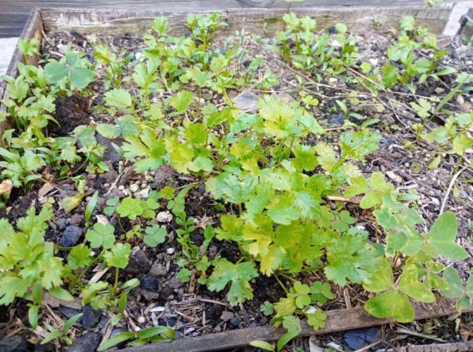
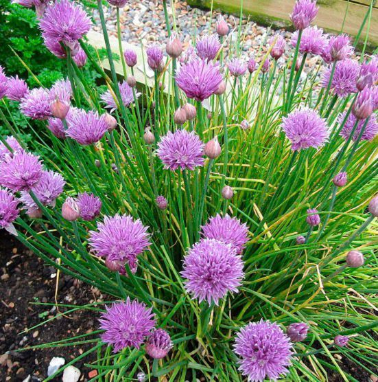
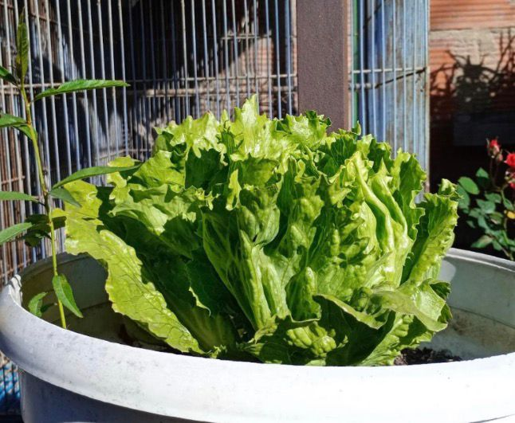

Cultivos caseros para una vida saludable

Nombre científico: Coriandrum sativum
El cilantro puede cultivarse en diversas condiciones climáticas.

Nombre científico: Allium schoenoprasum
Produce hojas delgadas y flores rosadas en verano.

Nombre científico: Lactuca sativa
Planta cultivada por sus hojas frescas y nutritivas.
Sembrar y cosechar tus alimentos en casa tiene muchos beneficios, el más importante de todos es el suministro de recurso vegetal orgánico, del cual se conoce completamente su procedencia y elementos usados en su producción.
Tener una huerta casera contribuye a la buena salud, pues estás evitando el consumo de agroquímicos presentes en muchos productos vegetales comercializados, asegurando una alimentación más saludable.
En cuanto a la parte económica, aunque se gastan ciertos recursos en la adquisición de insumos, los beneficios de producir alimentos propios superan ampliamente los costos.